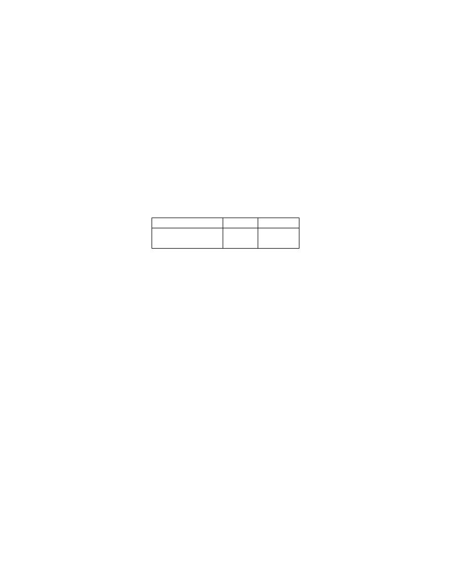

<table border="0" height="1453" width="1123">
<tr><td>
<div style="position:absolute; top:0; left:0;"></div>
<p style="position:absolute; top:67.755; left:72.000" id="bm000001"></p>
<div style="position:absolute;top:277.459;left:132.145;"><nobr>
<span style="font-size:45.493;font-weight:bold;">Preface</span>
</nobr></div>
<div style="position:absolute;top:411.429;left:132.145;"><nobr>
<span style="font-size:20.022;">This document describes the RISC-V privileged architecture. This release, version</span>
</nobr></div>
<div style="position:absolute;top:436.296;left:132.145;"><nobr>
<span style="font-size:20.022;">20190608-Priv-MSU-Ratified, represents the ratified 1.11 version of the machine and supervisor</span>
</nobr></div>
<div style="position:absolute;top:461.163;left:132.145;"><nobr>
<span style="font-size:20.022;">ISA modules.</span>
</nobr></div>
<div style="position:absolute;top:504.316;left:132.145;"><nobr>
<span style="font-size:20.022;">The document contains the following versions of the RISC-V ISA modules:</span>
</nobr></div>
<div style="position:absolute;top:544.991;left:433.814;"><nobr>
<span style="font-size:20.022;">Module</span>
</nobr></div>
<div style="position:absolute;top:570.590;left:400.738;"><nobr>
<span style="font-size:20.022;font-weight:bold;">Machine ISA</span>
</nobr></div>
<div style="position:absolute;top:595.458;left:389.487;"><nobr>
<span style="font-size:20.022;font-weight:bold;">Supervisor ISA</span>
</nobr></div>
<div style="position:absolute;top:544.991;left:566.442;"><nobr>
<span style="font-size:20.022;">Version</span>
</nobr></div>
<div style="position:absolute;top:570.590;left:566.442;"><nobr>
<span style="font-size:20.022;font-weight:bold;">1.11</span>
</nobr></div>
<div style="position:absolute;top:595.458;left:566.442;"><nobr>
<span style="font-size:20.022;font-weight:bold;">1.11</span>
</nobr></div>
<div style="position:absolute;top:544.991;left:665.909;"><nobr>
<span style="font-size:20.022;">Status</span>
</nobr></div>
<div style="position:absolute;top:570.590;left:653.799;"><nobr>
<span style="font-size:20.022;font-weight:bold;">Ratified</span>
</nobr></div>
<div style="position:absolute;top:595.458;left:653.799;"><nobr>
<span style="font-size:20.022;font-weight:bold;">Ratified</span>
</nobr></div>
<div style="position:absolute;top:643.268;left:132.145;"><nobr>
<span style="font-size:20.022;">The changes in this version of the document include:</span>
</nobr></div>
<div style="position:absolute;top:667.082;left:162.179;"><nobr>
<span style="font-size:20.022;font-style:italic;">•</span>
<span style="font-size:20.022;">Moved Machine and Supervisor spec to</span>
<span style="font-size:20.022;font-weight:bold;">Ratified</span>
<span style="font-size:20.022;">status.</span>
</nobr></div>
<div style="position:absolute;top:693.777;left:162.179;"><nobr>
<span style="font-size:20.022;font-style:italic;">•</span>
<span style="font-size:20.022;">Improvements to the description and commentary.</span>
</nobr></div>
<div style="position:absolute;top:720.474;left:162.179;"><nobr>
<span style="font-size:20.022;font-style:italic;">•</span>
<span style="font-size:20.022;">Added a draft proposal for a hypervisor extension.</span>
</nobr></div>
<div style="position:absolute;top:747.170;left:162.179;"><nobr>
<span style="font-size:20.022;font-style:italic;">•</span>
<span style="font-size:20.022;">Specified which interrupt sources are reserved for standard use.</span>
</nobr></div>
<div style="position:absolute;top:773.867;left:162.179;"><nobr>
<span style="font-size:20.022;font-style:italic;">•</span>
<span style="font-size:20.022;">Allocated some synchronous exception causes for custom use.</span>
</nobr></div>
<div style="position:absolute;top:800.562;left:162.179;"><nobr>
<span style="font-size:20.022;font-style:italic;">•</span>
<span style="font-size:20.022;">Specified the priority ordering of synchronous exceptions.</span>
</nobr></div>
<div style="position:absolute;top:827.259;left:162.179;"><nobr>
<span style="font-size:20.022;font-style:italic;">•</span>
<span style="font-size:20.022;">Added specification that xRET instructions may, but are not required to, clear LR reserva-</span>
</nobr></div>
<div style="position:absolute;top:853.247;left:182.201;"><nobr>
<span style="font-size:20.022;">tions if A extension present.</span>
</nobr></div>
<div style="position:absolute;top:878.821;left:162.179;"><nobr>
<span style="font-size:20.022;font-style:italic;">•</span>
<span style="font-size:20.022;">The virtual-memory system no longer permits supervisor mode to execute instructions from</span>
</nobr></div>
<div style="position:absolute;top:904.811;left:182.201;"><nobr>
<span style="font-size:20.022;">user pages, regardless of the SUM setting.</span>
</nobr></div>
<div style="position:absolute;top:930.385;left:162.179;"><nobr>
<span style="font-size:20.022;font-style:italic;">•</span>
<span style="font-size:20.022;">Software is strongly recommended to allocate ASIDs globally, so that a future extension can</span>
</nobr></div>
<div style="position:absolute;top:956.374;left:182.201;"><nobr>
<span style="font-size:20.022;">globalize ASIDs for improved performance and hardware flexibility.</span>
</nobr></div>
<div style="position:absolute;top:981.949;left:162.179;"><nobr>
<span style="font-size:20.022;font-style:italic;">•</span>
<span style="font-size:20.022;">SFENCE.VMA semantics have been clarified.</span>
</nobr></div>
<div style="position:absolute;top:1008.645;left:162.179;"><nobr>
<span style="font-size:20.022;font-style:italic;">•</span>
<span style="font-size:20.022;">Made the mstatus .MPP field</span>
<span style="font-size:20.022;font-weight:bold;">WARL</span>
<span style="font-size:20.022;">, rather than</span>
<span style="font-size:20.022;font-weight:bold;">WLRL</span>
<span style="font-size:20.022;">.</span>
</nobr></div>
<div style="position:absolute;top:1035.342;left:162.179;"><nobr>
<span style="font-size:20.022;font-style:italic;">•</span>
<span style="font-size:20.022;">Made the unused</span>
<span style="font-size:20.022;font-style:italic;">x</span>
<span style="font-size:20.022;">ip fields</span>
<span style="font-size:20.022;font-weight:bold;">WPRI</span>
<span style="font-size:20.022;">, rather than</span>
<span style="font-size:20.022;font-weight:bold;">WIRI</span>
<span style="font-size:20.022;">.</span>
</nobr></div>
<div style="position:absolute;top:1062.037;left:162.179;"><nobr>
<span style="font-size:20.022;font-style:italic;">•</span>
<span style="font-size:20.022;">Made the unused misa fields</span>
<span style="font-size:20.022;font-weight:bold;">WLRL</span>
<span style="font-size:20.022;">, rather than</span>
<span style="font-size:20.022;font-weight:bold;">WIRI</span>
<span style="font-size:20.022;">.</span>
</nobr></div>
<div style="position:absolute;top:1088.734;left:162.179;"><nobr>
<span style="font-size:20.022;font-style:italic;">•</span>
<span style="font-size:20.022;">Made the unused pmpaddr and pmpcfg fields</span>
<span style="font-size:20.022;font-weight:bold;">WARL</span>
<span style="font-size:20.022;">, rather than</span>
<span style="font-size:20.022;font-weight:bold;">WIRI</span>
<span style="font-size:20.022;">.</span>
</nobr></div>
<div style="position:absolute;top:1115.429;left:162.179;"><nobr>
<span style="font-size:20.022;font-style:italic;">•</span>
<span style="font-size:20.022;">Required all harts in a system to employ the same PTE-update scheme as each other.</span>
</nobr></div>
<div style="position:absolute;top:1142.126;left:162.179;"><nobr>
<span style="font-size:20.022;font-style:italic;">•</span>
<span style="font-size:20.022;">Rectified an editing error that misdescribed the mechanism by which mstatus .</span>
<span style="font-size:20.022;font-style:italic;">x</span>
<span style="font-size:20.022;">IE is written</span>
</nobr></div>
<div style="position:absolute;top:1168.114;left:182.201;"><nobr>
<span style="font-size:20.022;">upon an exception.</span>
</nobr></div>
<div style="position:absolute;top:1193.688;left:162.179;"><nobr>
<span style="font-size:20.022;font-style:italic;">•</span>
<span style="font-size:20.022;">Described scheme for emulating misaligned AMOs.</span>
</nobr></div>
<div style="position:absolute;top:1220.385;left:162.179;"><nobr>
<span style="font-size:20.022;font-style:italic;">•</span>
<span style="font-size:20.022;">Specified the behavior of the misa and</span>
<span style="font-size:20.022;font-style:italic;">x</span>
<span style="font-size:20.022;">epc registers in systems with variable IALIGN.</span>
</nobr></div>
<div style="position:absolute;top:1247.080;left:162.179;"><nobr>
<span style="font-size:20.022;font-style:italic;">•</span>
<span style="font-size:20.022;">Specified the behavior of writing self-contradictory values to the misa register.</span>
</nobr></div>
<div style="position:absolute;top:1273.777;left:162.179;"><nobr>
<span style="font-size:20.022;font-style:italic;">•</span>
<span style="font-size:20.022;">Defined the mcountinhibit CSR, which stops performance counters from incrementing to</span>
</nobr></div>
<div style="position:absolute;top:1299.766;left:182.201;"><nobr>
<span style="font-size:20.022;">reduce energy consumption.</span>
</nobr></div>
<div style="position:absolute;top:1349.981;left:558.837;"><nobr>
<span style="font-size:20.022;">i</span>
</nobr></div>
</td></tr>
</table>
